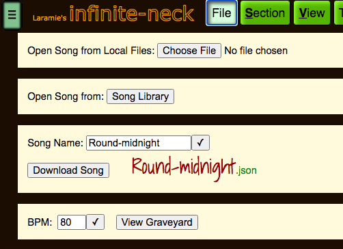
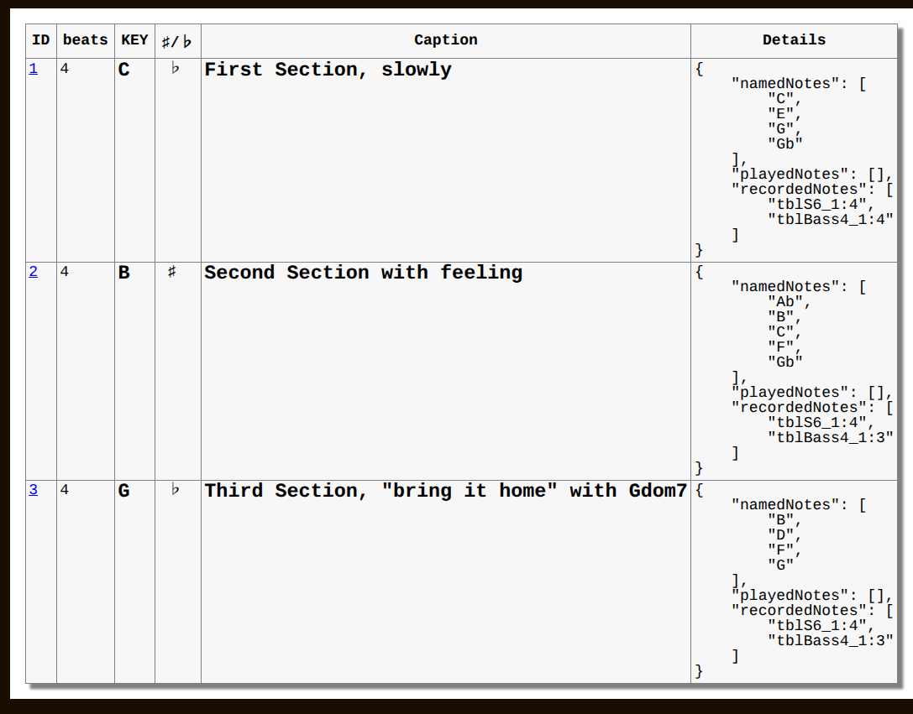

About
This tool, infinite-neck, helps you visualize notes across the neck of your instrument.

The fretboard is displayed as a spreadsheet-like table with cells representing each fret/string position. Clicking on cells puts "notes" on the virtual neck/fretboard, showing where you'll play them on the real fretboard of your instrument. You can add bars and beats, and loop the song. There's music theory baked into the tool, so you can automatically highlight all legal notes in G Mixolydian, for example, with separate sets of colors for chord notes, root, scale notes, passing-tones, and blue-notes.
infinite-neck has the following uses for practice and sharing:
✓ writing down new-to-you and interesting chord fingerings.
✓ capturing a concrete way to play a song.
✓ communicating the fabric of a sound: the possible notes and their moods.
✓ creating art with the patterns of notes, another way to internalize the layout and relationships of notes.
✓ improvising over the changes while looping.
You can run the program from my website:
• demo.laramiecrocker.com/infinite-neck
• No login required, free to use.
• Download/save the songs you create for later use or sharing.
Or, you can download the project from source in Github: github.com/laramie/infinite-neck
• Written in HTML, Javascript/jQuery, and CSS.
• Creative Commons Attribution-NonCommercial-ShareAlike license.
• Serve it up from a localhost python server such as python -m SimpleHTTPServer
• Serve it up from a localhost python3 server such as python3 -m http.server 8000
• Point Chrome or Firefox at http://localhost:8000/, and enjoy!
Instruments
✓ Supported instruments: guitar, bass, mandolin, cello, piano, midi-pads, uke, and banjo.
✓ All support left-handed and right-handed players.
✓ Each instrument may have multiple tunings.
For example, a left-handed, six-string guitar could be in Standard tuning,
or it could be in P4, Drop-D, or DADGAD.
Here is the tunings table, which shows all tunings for all supported instruments. (It's easy to add your own tunings.)

Or you could really get
lost in the world of alternate tunings and follow George Howlett's RĀGA JUNGLISM.
Instruments in Action
Most of the examples below and videos on our
youtube chanel
feature guitar.
Here are snapshots of what the other instruments look like.
Piano

Two Ableton Controller surfaces, when used with Theme: DJ TrailMix.
Novation Launchpad 8x8

Linstrument 8x24

We support Banjo

We even support the Chapman Stick!

infinite-neck Walk-through
Here is a blank song, with a Theme that shows the piano key coloring scheme (i.e. Ebony/Ivory) as a backdrop for each fret:

Here are a P4-tuning 6-string guitar, and a Standard-tuning left-hand 6-string, both playing a cowboy-chord D-major, and showing those notes across the necks. They are in editing mode with titles and controls, and are displayed in the same workspace.

Here they are in full-screen mode.

You can assign colors and styles to notes.
For example: named notes (C#), chord notes (I, III, V), scale notes (natural minor), mode notes (Mixolydian), enclosure notes, or passing tones can all have different colors and styles so you can visualize these patterns up the neck.

You can create Sections, and Beats within Sections.
A Section is like a bar or multiple bars where the underlying notes, modes, and keys don't change. Within a section, a beat can highlight any notes. The next beat could highlight different notes, but "Named Notes" stay for the whole section.
Each new section gets: new keys, number of beats, caption, enharmonic sharps/flats.
That is, a Song has one or more Sections, and each Section has one or more Beats.
Each beat's length (time duration) is determined with the "BPM", or "Beats Per Minute" setting, and there can be any number of beats per section, from 1 to some large integer.
You can then loop over the Beats in one Section, or in all Sections.

Transport showing Section 1 of 5, on Beat 3 of 4.
You can save your songs to share with someone or to come back and practice them later.
Within Sections, one key is the root key for the band, and optionally, a separate root key for the "lead". ("Bill is playing F# over Dave and the band's B".)
To show four chord changes over, say, a Dmin mood, you could use one Section with four Beats, or you could use four Sections.
With four beats in one Section, the neck would look like, say, a sea of bluish notes with several notes highlighted in golden backlight.
- the chord changes would be shown by MultiHighlight or by MidiHighlight, which highlight just the relevant notes across the neck(s) with golden box-shadows.
- the band is in multiple blue colors, e.g. slightly different colors for the I, the V, the minor 3, the Seven.
- these notes keep the same position and color for all beats in this Section.
Or, with four Sections, the neck would look like a sea of bluish notes, and as each section is played, you'd see notes change style and color, forming one chord per Section with their color changes, that are different than the Dmin mood, and so draw your eyes to the chosen notes/positions within a whole fabric of playable notes. You can also add beats (Highlights) to these Sections for more expression.
I find it essential, when communicating with musicians, to "think Piano". So in addition to the note markers, or fret positions that you should play, should not play, could play...etc., I have styled the guitar necks with piano key coloring embeded as ivory and ebony box inlay, though in software they look more like lit-up MIDI controllers built into your guitar neck like Guitar Hero with half of Synthesia bolted on.

That is, ahem, a Song has one or more Sections, and each Section has one or more Beats.
Why
Obviously, the neck is NOT infinite, since we play instruments with a fixed number of strings, and a playable number of frets, generating a listenable set of tones. (But you could have an infinite number of frets, since they get infinitely smaller as you approach the bridge, albeit infinitely more unplayable.)
And thinking about the neck as infinite helped me to learn the repeatable patterns of the neck, and not be rooted to the nut or open strings as much. In fact, I use open strings more now as drone notes while I'm playing high up on the neck, because going up the neck doesn't unroot me from the scale I'm playing.
The point is that the instrument that got me started on this madness was the Strandberg Boden 8-string guitar with 24 frets! It seemed infinite to me!

Also, deciding to play this beast meant that when switching to 8-string bass (or 5-string bass), I'd have to know different layouts than Standard guitar tuning. So I decided for my own practice, I would use Perfect-Fourth-Tuning (P4) on this 8-string guitar and all my basses. Soon, the logic and playability of this P4 system led me to convert some of my 6-string guitars to P4. My soloing and comping advanced remarkably. I never realized that the part of my brain that likes to improvise gets all anxious and goes away when I hit that major third between the G and B strings and I play a real clam because I'm missing a half-step.
Along the way, I had to sort out where my Classical training and Jazz training had different names
for the pitches of a scale, and what to call these enharmonically,
and what to call these pitches when the key changed,
but the played note was the same.
☞ e.g. the band jumps from the key of A
to the key of D# and you want to play the minor third function in the new key,
or you want to know what that minor third you were playing in A means,
now that everyone else is playing in D#.
"Girl from Ipanema" anyone?
☞ Classical purists note--here
we show your choice of [all sharps] or [all flats] in any key,
per Section, but no weird enharmonic names or mixed sharps and flats--sorry,
no B# or C## for you!
So I decided to share this tool and to include other tunings, and ambidexterity, so you can use this tool in your instrument and tuning of choice.
Open some of the example files under "File | Open song from: [Song Library]" to see it in action, or watch some of the videos on our youtube chanel.
You'll want to use this tool to:
- Understand Laramie's system of scale note/function naming (a hybrid between Jazz and Classical conventions), and its uses for singing, playing, and visualizing modal and modeless playing.
- Try the benefits of Ebony/Ivory visualization from the piano, brought to the guitar. Especially when learning modes or playing in "The People's Key".
- Apprehend the patterns formed by scales and chords across and up the neck.
- Move these patterns around the neck.
- Watch lead patterns moving against patterns of comping, and practice improvising over the patterns and changes.
- See the difference between tunings in real time (pull up two tunings and press Ctrl-minus in your browser to make them both fit).
- Practice a song someone has saved in some other tuning, by observing it to your tuning (see listeners).
Contact Laramie with any questions, comments, or gripes.
Help Videos
Help File
- About
- Why
- Help Videos
- Help File
- Laramie's system of scale note/function naming
- Usage
- Startup
- Copy, Paste, Delete, Save, Versions, O My!
- Note Types -- special handling
- Context Help Topics
- Options
- The Graveyard
- Themes Gallery
- Keymap
- Command-line Menu
- Plugins
- Techie Bits
- Glossary
Laramie's system of scale note/function naming
All note functions with all note names (Key of C, P4 tuning):

All note functions, root C shown in aqua, diatonic C-major notes in yellow, and black keys in gray with no notes,
because C-major has no black key notes.:

Note functions for just one octave, chromatic scale in C:

| Degree | Symbol | Name | Example in A | Pronounced | Classical |
|---|---|---|---|---|---|
| 1 | I | one | A | one | I |
| 2 | τ | tau | A# | tau (like the Greek letter, rhymes with cow) | dim2 |
| 3 | II | two | B | two | II |
| 4 | m | mi | C | my | min |
| 5 | III | three | C# | three | III |
| 6 | IV | four | D | four | IV |
| 7 | Θ | tri | D# | try | tritone |
| 8 | V | five | E | fie--rhymes with five without the "v" sound | V |
| 9 | σ | sa | F | rhymes with cat without the "t" | min6/aug5 |
| 10 | 6 | six | F# | six | VI |
| 11 | δ | dom | G | sounds like the begininning of "dominant", rhymes with Tom | dom7 |
| 12 | Δ | say | G# | sounds like "say"; like the 'a' in "major seventh" | VII |
Classical music theory provides only 7 note names, and then expects you to glue on words like "augmented", "diminished", "altered", "major", and "minor". The problem is the symbols can change, so that for example the "II" becomes "ii" if diatonic, which makes it minor. Add Jazz lingo and you'll hear terms like "flat 9" or "the flat 2". And in Classical terms it would not be correct to notate a 12-tone chromatic scale thusly: I ii II iii III IV v V vi VI vii VII. Because ii represents the minor mode and not the flatted II. Modernized Solfège get close, but few people use this system, and it does not have single-character symbols. These examples don't explain the problems well, or even correctly, but that's kind of the point. These systems do not precisely address what I want to express: a unique set of single letter names for each of the twelve tones of the chromatic scale. I do this by assigning names concretely, which apply in any 12-tone playing, assuming you know where the "root" is, or the key of the band or dominant instrument, usually the bass player. I used symbols familiar to Jazz and Session players, and added a few new ones where singular, concrete names were needed.
Features of the system
- The "Name" is my name for that symbol and function
- The "Pronunciation" is my way of singing that symbol, for example "m" is named "mi" and is pronounced like the English word "my".
- "Symbol" is also called Function, Function Name, or Note
- A Θ is always 7 steps up from the root.
- If you change root, the new Θ is calculated as 7 steps above the new root.
- A III is always a major third.
- An m is always a minor third, and so on.
- It's easy to think of the notes as simple: one character, one syllable
- I think the easiest to sing sounds are shown in my pronounciation--one syllable, ends in vowel.
Here, the Root Key is set to the key of C:

Here, it is the key of F:

Alternatives
Navigate to the Function Symbols in the View menu:
NoteFunction symbols dropdown shown:

There are built-in alternatives, and a way for you to define your own.
Built-in alternatives

| scheme | usage | display |
|---|---|---|
| Default | Laramie's system | I τ II m III IV Θ V σ 6 δ Δ |
| Sounds Like | Sung words for Laramie's system | One Tau Two Mi Three Four Tri Fi Sa Six Dom Say |
| Function Numbers | Counting from 1 as the first, Root pitch | 1 2 3 4 5 6 7 8 9 10 11 12 |
| Function Offset | Distance from the Root | +0 +1 +2 +3 +4 +5 +6 +7 +8 +9 +10 +11 |
| Solfège | A bit of Old Europe, modernized. | Do Ra Re Ma Mi Fa Se Sol Le La Ta Ti |
| Kanji Numerals | Nobody uses this notation (yet), but Kanji is cool. | 一 二 三 四 五 六 七 八 九 十 十一 十二 |
The best way to understand these is to fill up the neck with NamedNotes, then select each of the schemes in the dropdown to try them out. They update in real-time, but you may have to scroll to see the neck.
As you do that, the editing box called Function Symbols will get populated with the internal string of characters and HTML character entities.
Setting the scheme Function Numbers for Function symbols:

The Function Symbols get set to this:
The notes display like this:

User-added alternatives
You can change the NoteFunction symbols to any string or HTML Entity you choose.
A string is anything you can type on the keyboard; an HTML Entity is something like &blah; where blah
is some string of numbers and letters--the browser turns them into things you can't type, like symbols.
You just need to edit the array here:
View | Function Symbols
This is a Javascript array, so the commas, quotes and braces must remain exactly as they are--just change the values between the quote marks, leaving the quotes, commas and braces.
They default to this:

Or you could go crazy and use lots of HTML Entities:

Or use regular strings, such as Solfège:

Early in the design phase, I tried extending the Classical notation to use chord function names as note function names. I find it confusing, being all too similar. So this scheme is not available in infinite-neck. Drop me a note if you have a better idea, but here is what that would look like:

Usage
The neck is shown as a table of cells, like a spreadsheet. A cell is one of the squares on the neck, and represents one fret on one string.
infinite-neck allows you to mark the notes on your Instrument with various types of notes, shown below. Otherwise, a cell is empty. (You can also choose to show all the note names in all cells, but these won't have an inner border or backglow behind them as notes do.) When a cell has one or more notes or highlights, it is called "Active".
With the various types of notes, you can express notes which should be known anywhere on the neck, or which should be played exactly where shown. With recording Beats and ordering the Sections, and with Looping, you can then arrange the song into a practice sheet, or a visualization of notes to play or notes you could play.
To help you visualize the neck, infinite-neck shows where the piano keys would lie on your tuning. In most Themes, cells have a white background for white keys on the piano, and a gray background for black keys on the piano.
Tunings may change on your guitar, such that a C may the the first fret on the second string, or it may be the open second string in P4. But a C is always a white key, and a C♯ (or D♭) is always a black key, except for these Themes:
- "Coffy Brown" does not make a distinction between black and white.
- "Blade" has black for black keys and hexagons in the white keys.
- "Reverse" has white for the black keys, and black for the white keys.
- "Snow" has white for all keys, with subtle grey borders.
- "Wite-Out" has everything white and behaves as a completely blank canvas.
- "Blackout" has all black keys.
- "Matrix" has all black keys and command-line colors.
- "Landau Top" has brown and tan keys (just like a cherry, stock Chevy Monte Carlo).

And any Theme can be changed by choosing the same color for noteWhiteKeyColor and noteBlackKeyColor in the Theme.
Here are six cells showing four white-keys, and two black-keys. A "Single" note is placed on A, and a "NamedNote" is placed on F♯ which selects all F♯s.

Click a Palette note kind (Named, Single, Tiny, Bend...).

Click a Palette radio button to select a note role, e.g. Root or Chord,

or just some color you like.

Click any cell. Cells of that note name turn the selected color.
- e.g. Click C, E, and G.
- Now with "Named" notes, you have all Cmajor chords shown.
- With "Single" notes, you just have the cells you clicked.
- With "Tiny" notes and "Bend" notes, you'll have smaller note functions placed over the cells.
Click the Clear radio button, then any note name you want to clear. (These are specific to the kind of note, so also select the kind of note.) Actually, while you have a note style selected, you can also just click the note again with the same style to remove that note--click on, click off, click on, click off. Karate Kid anyone?
Check the 'Highlight' checkbox to put a border around just one square, e.g. to highlight the actual chord voicing you would play. With "Pitch" and "Multi" notes, you'll just highlight those notes:
- Pitch shows all notes with one MIDI pitch highlighted in yellow outline on that instrument.
Here it's a P4 guitar, showing all positions with MIDI pitch 62.

- Multi lets you highlight multiple notes at once, by played position.
Here's that same P4 guitar. We have, again, shown a D-major chord across the neck with NamedNotes in blue.
The actual fingering we'll start with is shown with SingleNotes in filled-in magenta.
Plus, we have highlighted, in magenta outline, a handy dominant seven chord,
which we could play as a substitution if we wanted a Blues seventh.

Click the 'keep' radio button, to avoid making changes when scrolling around.

Click the 'clear' radio button to delete a note of the kind selected (Named, Single, Tiny, Bend).

Startup
infinite-neck starts up with a blank song, and default instrument you can just start putting notes on by clicking in the cells that represent fret positions.
Once you have some notes you want to save as a song, use File | Download to save that song to your local computer. Later, you can open this song with File | Choose File. All the Sections, Instruments, and Notes, as well as the preferences and choices you make are saved in that song file, such as Tunings, Themes, View Options, and the Graveyard.
infinite-neck remembers just a few things between sessions that are not in the Default song. These you can set with the buttons on the Desktop page: Desktop | Save Scaling Prefs and Desktop | Save Instrument Prefs and apply to the Default song you get when you start up. Opening a song generally sets Scaling Prefs, and certainly has its own instruments displayed.
infinite-neck will also accept a few parameters from the URL:
| Query Param | Values | Example |
|---|---|---|
| tuning | Tunings | All Tunings :: ID e.g. Bass4, P46, S6 | http://demo.laramiecrocker.com/infinite-neck?tuning=Bass4 |
Copy, Paste, Delete, Save, Versions, O My!
infinite-neck doesn't have many of the things we associate with computer programs. It doesn't do Copy/Paste, for example. It doesn't do Undo/Redo. But there are functions for getting what you need to get done, with different idioms.
| Idiom | What to do |
|---|---|
| Undo/Redo | Use the Graveyard to revive things you delete: Sections, Stylesheets. You can revive multiple times, so this can be used to copy/paste a Section. You can also Clone a section. |
| Copy Section | Use Clone or Shallow clone on the Section Drawer in the Transport. Clone copies all notes and Display Options. |
| Delete Notes | To delete a note you placed by clicking, just click again. You can also select Clear on the Palette and a Note type to clear just one kind of Note type, e.g. Bends. |
| Copy Notes | You can't copy/paste notes, but you can copy/Clone whole sections, and within that new section you can transpose. So the flow would be:
|
| Open | File | Open Song | Choose File, or File | Open Song from [Song Library] |
| Save | File | Song Name then File | Download . This downloads the song to your computer. To open it again later, use File | Open Song | Choose File. Since Undo/Redo is not available, save your file often so you have versioning. |
| Version | Since you can download a song multiple times, your browser will likely add sequence numbers to the filename if it would conflict with a filename in your Downloads folder. Voila! Instant versioning. |
| Merge | Open the first song. Check the checkbox just under Open Song that says "Append sections to current song" then open the second song, and you'll have those sections appended. |
| Preferences | Preferences are stored in the song file. If you have preferences you'd like to apply every time, create a song with one empty Section, then save it with a name like Preferences or Template so you can find it later. Always use that file at the start of your work and change the name to the new, working song. If you want to open another existing song, open your Template file first, then open the song you want to see second with the checkbox "Append sections to current song". |
Note Types -- special handling:

✓To keep highlights: record them in individual Beats within Setions.
♦ Highlights you get when "REC" is inactive are not kept in the Section.
✓NamedNotes persist in Sections, but can't be recorded in Beats.
✓SingleNotes, Tiny notes, and Bends persist in Sections, and can be recorded in beats.
♦ If "REC" is active, notes record into beats, as you click them
♦ If "REC" is inactive, notes record into the Section, that is, they persist for all the beats.
✓SingleNotes are like NamedNotes, but you only get one note, not all notes that match the note name.
♦ So a NamedNote "F#" will select and color all F#'s on the neck.
♦ A SingleNote "F#" will just color one F# cell: the one you clicked.
♦ A SingleNote has a corner rounded off in its display, and a brighter default backglow.
Here is a snapshot of a part of the neck showing all the Active I's and III's with NamedNotes, and one Active τ with a SingleNote.

Context Help Topics
File

Keyboard shortcut: F is an uppercase "F", lowercase "f" being for fullscreen.
The file menu lets you open songs to play or edit:
✓ songs from your local system you created
✓ songs someone sent to you
✓ from the library on our web server
The file menu lets you save songs to your local system.
☞ Enter a name for your song (e.g. change the name from "Round-midnight" to your song name).
˙ This file is in JSON format, which is readable in any text editor.
☞ Click the "Download Song" button.
˙ Affirm the system dialog, choosing a location for your file.
˙ From here, you can archive it, share it, and open it later to view it again.
Songfile Info
The Songfile Info page lets you keep notes right in the song file itself. This is handy for things like tuning reminders, setup notes, fingering hints, rehearsal directions, or a short formatted description of the song.
You can open Songfile Info in any of these ways:
✓ Click the Info button in the top menu button row.
✓ Use the File menu command .
˙ Some songs may also open it automatically when the song is loaded.
The page has two tabs:
✓ Info shows the stored content as rendered HTML.
✓ Edit shows the raw HTML in a textarea, so you can type or change it directly.
To close Songfile Info, click Close or press ESC.
There is no separate Save dialog. Changes are kept when you:
✓ leave the textarea,
✓ switch away from the Edit tab,
✓ change the "show on open" selector,
✓ or click the little Save checkmark button.
Allowed HTML is intentionally limited to simple formatting. Think of it as safe document markup such as:
✓ paragraphs and line breaks,
✓ headings,
✓ lists,
✓ emphasis such as bold and italics,
✓ code/preformatted text,
✓ and simple tables.
˙ Scripts, links, forms, images, styles, and other active or external content are stripped out.
The show on open selector has three meanings:
✓ none means do not automatically show Songfile Info when the song opens.
✓ parked means open it in its normal parked place in the app.
✓ float means open it as a floating window.
If the Songfile Info content is empty, the app treats that as no Info and will not auto-open it, even if the selector had been set earlier.
Transport
The Transport lets you:
- View the key of the current Section.
- Navigate through Sections, and beats in each section.
- REC: Record notes in beats in the current section. These become RecordedNotes and show up when looping.
- LOOP over the beats in just one section, with the little infinity button: .
- LOOP over the Song, all Sections.
- Open the Section Drawer with the button

Transport showing Section 1 of 5, on Beat 3 of 4.

On the transport, the button with the section mark: § shows/hides the Section Drawer:
Map Spacebar
You can map the spacebar to one transport action at a time. Use the File menu path to choose what the spacebar should do.
The top-level spacebar mappings are:
- Restart song:
- Restart section:
- Reset song:
- Reset song hard:
- Unset the spacebar mapping:
You can also map the spacebar to section navigation with or beat navigation with .
Once mapped, pressing SPACE runs that transport action directly. This is useful for hands-on practice when you want one repeatable motion under your picking hand or your foot pedal keyboard.
Reset song returns you to Section 1, Beat 1 and preserves the active loop mode if one was already running. Reset song hard does the same repositioning, but also triggers the stronger reset behavior used by plugins that need to clear generated state.
Transport Navigation Table
This table summarizes the transport navigation commands available in the app. The Menu column shows the command-line path, and the UI column names the related transport control when one exists.
| Navigation | Avail | Key | Menu | Action | UI |
|---|---|---|---|---|---|
| LoopSong | ✓ | l | toggleLoopSections | Loop Song button | |
| SectionBegin | ✓ | gotoFirstBeat | |||
| FirstBeat | ✓ | gotoFirstBeat | |||
| FirstSection | ✓ | < | firstSection | First Section button | |
| PrevBeat | ✓ | b | prevBeat | Previous Beat button | |
| NextBeat | ✓ | nextBeat | Next Beat button | ||
| LastBeat | ✓ | gotoLastBeat | |||
| PrevSection | ✓ | , | prevSection | Previous Section button | |
| NextSection | ✓ | . | nextSection | Next Section button | |
| LastSection | ✓ | > | lastSection | Last Section button | |
| LoopBeats | ✓ | toggleLoopBeats | Loop Beats button | ||
| RestartSection | ✓ | gotoFirstBeat | |||
| RestartSong | ✓ | < | firstSection | First Section button | |
| ResetSong | ✓ | resetSong | |||
| ResetSongHard | ✓ | resetSongHard | |||
| LastBeatInSong | ✓ | gotoLastBeatInSong |
Section Drawer

On the transport, the Section Drawer is opened, giving you access to all the Section controls..
The Section Drawer lets you:
- Set the Caption of the current Section. (Might need to hit a to show the Song caption.)
- Set the Key of the current Section. (Also keyboard shortcut k cycles through these.)
- Set the LeadKey of the current Section (TinyNotes follow LeadKey) or "root" to follow the Key.
- Set the enharmonic choice of Flats or Sharps for the key of the Section. [See Key Change below]
- Transpose all NamedNotes in the Section. (Use keyboard shortcuts for these: File | Allow transposition by keyboard shortcuts)
- Add, Shallow clone, Clone, and Delete Sections
- Move Sections to a Destination of a Section number or BEGIN or END, bumping any Sections there later.
- Save and Clear the Display Options, which include the Root Key and Lead Root Key, plus all the items on the View menu, plus Theme and Stylesheets.
- Add a beat before the existing first beat
- Insert a beat, moving the current beat and all others later
- Delete the current beat
- Add a beat after the last beat
- To LOOP over the beats in just one section as you add notes to the beats use the Transport infinity button:
Section Destination

Destination § is a dropdown that gets updated as you navigate Sections.
This is the Destination Section number of Move, Add, Shallow, and Clone. There are some subtle differences.
When moving Sections, pay attention to the Destination. It's just like a deck of cards: if you pull a card out of the middle, and put it in earlier or later in the stack, the cardinal number of the cards changes. This is where the moved Section ends up.
- So chosing Destination of 3 moves the current Section to Section 3, and Section 3 becomes Section 4, Section 4 becomes Section 5, and so on to the end of the Song. Also the Sections after the current Section get moved towards the beginning of the Song to close the gap.
- Chosing "BEGIN" as the Destination moves to Section 1, pushing the existing Section 1 to Section 2, and bumping all other Sections later as well,
- Chosing "END" as the Destination moves the current Section to the end, after all existing Sections, the Sections after the current Section being moved towards the beginning of the Song to close the gap.
When Adding or Cloning Sections, new Section goes after the Destination which gets updated as you navigate Sections. However, if you change the dropdown, the new Section will go after that Section number. This is where they end up:
- Add: creates a new Section after the current Section (or Section shown in Destination), bumping any existing later Sections later in the Song.
- Shallow, and Clone: clones the current Section, adding it after the existing Section (or Section shown in Destination), bumping existing Sections.
- Delete: deletes the current Section, (ignoring Destination), moving any following Sections towards the beginning of the Song to close the gap.
Transposition
Allow Transposition
If the File | Allow transposition by keyboard shortcuts d, U, u, D, j, & J checkbox is checked, then these keyboard shortcuts work; otherwise they don't. This prevents you from inadvertently transposing a Section, which is confusing if you don't notice the transposition hint. The hint is that all the NamedNotes move (which you might miss), and a yellow highlight is placed around all the new Root notes (which only hangs out until you click a note or change sections).
You can change this from the command-line:
- unlock the song (allow transposition by keyboard shortcuts):
- lock the song (disallow transposition by keyboard shortcuts):
Transposing
Transposing "up" moves the notes and the Root Key up the scale one half-step. (Uppercase matters: u goes up, U goes down. d goes down, D goes up.) Transposing with the "j" key ("jump") moves the notes and the Root up a fourth, which jumps up one string on a P4 instrument. Remember that jumping up a fourth from the G string to the B string in Standard guitar tuning will not be on the same fret. (Uppercase matters: j jumps up, J jumps down.)
Here we show a Section with a C major chord shown in NamedNotes (all legal notes on the neck) which will move when we transpose. We have added a B-flat SingleNote, which is the dominant seven. Since it is a SingleNote, it won't move when we transpose. (Also, all SingleNotes have a thin yellow backglow so they look different from NamedNotes, much thinner than the fat yellow Highlight which surrounds the entire cell.)
Transposing from C to D-flat then looks like this:
Before:

After:

Notice that the C major chord is now a D-flat major chord, that all D-flats are highlighted with a fat, yellow Highlight to show you the new Root, and that the B-flat SingleNote is still a B-flat, but its Note Function has changed from the dominant seven to the six, since its relative position to the Root has changed (it was two strings up from the Root, same fret; now it is still two strings up, but the Root has moved one fret up the neck). You can see the new Root key in the caption bar of the instrument: a small, sunken box has a D-flat where before it had a C. You can also see that AutoColor has shown the Note Functions being the same in the new key, since AutoColor assigns colors to Note Function, regardless of NoteName or Root Key. In this AutoColor ColorScheme ("CycleOfColors2020"), the Root is black, the V is red, and the III is a kelly green. In this scheme, Dominant seven (δ) is a pool blue, while the 6 is a chartreuse green. [The updated default AutoColor scheme is "CycleOfColors" and is different than these examples.]
Key Change
If we had just wanted to change keys but leave all the notes, we would just change the key of the Section with the dropdown "Key". Mashing on the "Flats" or "Sharps" buttons first sets whether the "Key" and "LeadKey" dropdown will show sharps or flats, and also always updates how the neck will display them. The result would look like this:
Before (Root = C):

After (Root = D-flat):

Notice that the notes stayed in the same positions, but the keys have changed. (The Note Names are still [C,E,G] on the same frets and strings.) Thus all the notes have new Note Functions. Since AutoColor is on, the notes automatically get new colors--AutoColor assigns a color per Note Function.
The keyboard shortcut for changing the key is "k", which cycles through the keys in chromatic order, so that you can quickly try out different keys. This allows you to see which key makes the most sense for the notes chosen. You will see the function names (and auto-colors) change as you change keys, since the Note Functions are relative to the Root Key. "Shift-k" cycles through the keys in reverse chromatic order. The new key root is shown in the caption bar of the Section and the caption bar of the instrument, and all the notes that match the key letter are highlighted until you do something else.
The "Sharps" and "Flats" buttons in the Section menu let you choose whether to show the notes on the neck with sharps or flats. This is just a display option, and does not change the actual notes on the neck, which are always the same MIDI pitches. So if you have a C# note, it will be shown as C# if you choose "Sharps", and as D♭ if you choose "Flats". The command-line shortcut for doing this is , for section | sharps, or , for section | flats. [After any command-line command, hit ESC to close the command-line.]
Just like using the dropdown "Key" or "LeadKey" on the Section menu page, on the command-line you can also set the key of a Section with the command . This brings you to the menus choices of where you can choose the keys: , which sets the Root key, and sets Sharps to true for the major keys A,B,C,D,E and G which have sharps, and sets Flats to true for the major key of F, which has a B♭.
At that menu, you could also select where you can choose the keys: , because these major keys have flats. You can then override Sharps or Flats with , or .
So choosing "e♭" would set the Root key to E♭ and Flats to true. If you then chose Sharps, the Root key would be D♯ and all other black keys would be shown as sharps.
LeadKey is only displayed on the neck using TinyNotes, and these show only the Note Function, not the Note Name. So just set the LeadKey dropdown to the pitch you will be playing, even though its enharmonic name may be incorrect, because whether Sharps or Flats are shown in the LeadKey dropdown is chosen by the Section's Sharps/Flats buttons, which also set the choices displayed for the Key dropdown. Similarly, using the command-line to set LeadKey, choose the correct pitch using the available "black keys" menu choice, e.g. D♭ instead of C♯, which is not available through the command-line.
Remember, this is just a display option, and does not change the actual notes on the neck. Suppose you want to play in Gminor, which has two flats. You would select G as the Root key, and select Flats. infinite-neck doesn't know about major and minor keys or key signatures. It just lets you display all the black keys with either Flats names or Sharps names. No mixed use of sharps and flats is displayed, there is no concept of accidentals, there are no double flats or double sharps, and there is no display of enharmonic names like C♭ B♯ E♯ or F♭.
Remember, this is just a display option, and does not change the actual notes on the neck. So it is possible to choose B as the key with Flats, and the neck will display the following notes: B♭, B, C, D♭ D, etc., even though this may be enharmonically weird. If you are playing in G, set Sharps to true, and if you are playing in Gminor, set Flats to true.
To recap, here are some example command-lines. To get these to work just start typing the command letters shown. The initial forward-slash key pops up the command-line. (It's best to have any Button Menus closed by hitting ESC first.) Note that the Sharps and Flats change in the display of each cell, following the command-line choice. To create these examples, we chose different notes that matched the scale we would be playing.
Input notes for D♭major, then set the Root Key to D♭:
ESC

Input notes for Gmajor, then set the Root Key to G, for playing Gmajor:
ESC

Input the notes for G natural minor, then set the Root Key to G, then ENTER twice to go up two command-line levels, then f for flats for playing Gminor with Flats:
ENTER ENTER ESC

Here is how it looks (and is enharmonically incorrect) if you chose G with Sharps, but were playing notes in Gminor:

Section Print
You can see three tabular views of the Sections and their Notes:
- Section Print Notes:

- Section Print Details:

- Section Print Summary:

View
Display Options
All the controls on this page update the fretboard display in real-time. All can be saved to the Section Display Options, such that when you navigate to another Section, the Display Options you saved will be restored upon coming back to this Section.
If you want to save these options, it is best to set them at least in the first Section, so that when looping the song, or opening the song from a file, the default options you chose get restored logically. When you navigate to another section, the options persist until you hit another section that has Display Options set. As you change Sections, if the View menu is showing, you'll see the option controls get updated.
Also click Save Display Options to overwrite previously saved options for just the current Section.
Click Clear Display Options to delete these options for just the current Section.
These buttons also appear in the Section menu, and apply to the current Section.
You can audit all the Display Options for all Sections that have them set with the command-line Scroll down to see the audit of all Sections with Display Options. The options that change are highlighted.

You can also sit on the View page and watch the controls change while you hit the Transport next section buttons, or the keyboard shortcuts ( < and > ). Remember that if one of the controls traps the keyboard, click in some blank spot of the screen or hit ESC and then V to come back to the View menu.
There's a bit more info in the Glossary::Display Options entry
Subscript Options
You can play around with the following options:
Show Right Subscript
Show Right Subscript in Center
Show Left Subscript
Show MIDI Number
Right Subscript: Function | Notename
These will render various results like these, which you can also tweak with the sizing options.
For all these examples, "Show Left Subscript" and "Show Right Subscript" are checked.
Right Subscript: Notename

Show MIDI Number, Right Subscript: Notename

Right Subscript in Center, Right Subscript: Notename

Right Subscript in Center, Right Subscript: Function

Right Subscript in Center, Show MIDI Number, Right Subscript: Function

Right Subscript in Center, Show MIDI Number, Right Subscript: Notename

Themes Menu
Normally, you can change Themes by just selecting one from the dropdown in the main menu button bar. See screenshot of Themes Gallery in this helpfile.
The Theme menu is for tweaking the current Theme, and for building new Themes. It's a bit techie, so we'll explain it in a video at some point.
Fill
Fills in order of: Scale, Chord, Root.
• To fill just Scale, set Chord and Root to "Keep".
• To fill Scale and Chord, set Root to "Keep".
• To erase, select "None" for color and click "Fill Notes" again.
• AutoColor chooses colors based on the note function colors: [note1, note2, ... note12],
which overrides noteChord, noteScale, and noteRoot.
So to see the color effect of filling, AutoColor button should be punched out, not punched in .
Tunings
Look under the "Tunings" menu to turn on and off various installed tunings, and customize them (number of frets, left-handed). These controls update the instruments in real-time, but you may have to scroll down to see them.
Special Rows
Tunings S6, Standard 6-string guitar, and S8 default to using "Special Rows". The thinnest two strings are shown in a different background color scheme, so P4 players can have a visual reminder of the Special-ness of these strings--they are a half-step off of Perfect Fourths tuning (P4). By default, an S6 or S8 tuning turn on "Special Rows" with a checkbox in the "My Tunings" table or "All Tunings" table. Uncheck if you don't want special rows displayed with different background colors.
You can also Theme these to other colors under Theme :: "Note White Key Special Color", and "Note Black Key Special Color".
Here SR is checked, and the Special Rows and displayed in other colors:

Here SR is unchecked, and the Special Rows are displayed normally:

Palette
The Palette lets you choose what kind of note you'll be placing when you click in a cell, and what color and hatching will be used.
First, choose what kind of note: Named, Single, Tiny, Bend, Pitch Highlight, Multi Highlight, or Fingering. There's more detail in the Glossary about these note kinds.
Then, decide whether you'll use AutoColor. With AutoColor, Note Functions are assigned a color each by the current ColorScheme. Without AutoColor, more color buttons will appear: these are colors assigned to Roles. A Role is something like Root or Chord. All Root notes then have the same color. All Chord notes have the same color. (Except that we provide not just one but [Chord, Ch2, and Ch3], so that you can have three different chord colors to be assigned as you click.) If you just want a color for each note, that you'll assign, then click "More..." after the Major Seventh role color radio button. You'll then see the full palette infinite-neck provides. Whenever AutoColor is active, your color choices for individual colors chosen this way will be ignored.
AutoColor uses a ColorScheme. infinite-neck comes with a Default ColorScheme, called "CycleOfColors", which is based on my whack theory that associating a color with each Note Function helps to learn and spot patterns of chords. That is, a Major Seventh chord always looks the same, color-wise, so seeing an inversion of that chord on the neck should stimulate a memory, and help us navigate the pattern of that chord all around the neck. If you find it weird or annoying, you have two options: 1) turn AutoColor off; 2) customize AutoColor to a scheme of your liking.
Customization also allows you to have multiple ColorSchemes, for example, one scheme for minor moods, another for major moods.
With AutoColor off, you can still have the colors and hatches mean something, by using Roles. A Role for Root or Chord was discussed above. You can also use or customize the Roles for Avoid, Avoid2 and Avoid3, so that these notes mean "Avoid this note!" To do this, you would turn AutoColor off, then click Avoid, then click in a cell to place that Avoid note, either a SingleNote, or a NamedNote. You can do this in multiple keys, such that in Section 1, in the key of C, the flat II (τ) would be an Avoid note, while in Section 2, in the key of A playing a Gypsy scale where the flat 2 (τ) is legal, then the natural 2 (II) would be an Avoid note, so you'd place a Role note of Avoid there.
Customizing the colors for the Roles [Root, Chord, and Scale] sets these as the colors for the Fill menu. When using Fill, you probably want AutoColor off to take advantage of this.
To change ColorScheme away from CycleOfColors, click the [Customize...] button on the Palette menu. Chose colors and hatches for each of the Note Functions [note1, note2, ....,note12] using the little picker buttons and their pop-up pickers. (Click the little button again to make the picker go away, or click a color/hatch to chose it and make the picker go away.) When you have colors selected for each of the Note Functions [note1,...,note12], then click the [Record Stylesheet] button. You can provide a Stylesheet name, or the name "user" will be filled in for you. Now the Stylesheets will be shown, the same as if you had clicked the [Stylesheets] button, and your new Stylesheet will be a the bottom of the list. The bottom row is the composite stylesheet of built-in stylesheets plus your user stylesheets, as selected with the links and checkboxes, which you can play around with. This result is your active ColorScheme, and is saved in the song. To apply it to other songs, open this song first, delete any Sections, then open the Song you want to view using the "Append sections to current song" checkbox on the File menu. (There always has to be one Section, so just mash on the Delete Section button repeatedly in the Section menu until you are down to one Section and it is blank.) Now when you open the other song, you'll see that song's Sections, along with its saved Stylesheets, and your new Stylesheet.
You can also customize the colors for Fingering the same way. You'll see that the Default stylesheets are broken up into CycleOfColors for Note Functions, Fingerings for fingering colors, and Roles for Role colors. You may overide any of the individual colors in your stylesheet, and leave some Roles or Fingers or Note Functions as Default by not adding things in your stylesheet. You may also have multiple stylesheets by entering different names in "Stylesheet name" before clicking "Record Stylesheet".
There is another way to record a stylesheet: manually place colored NamedNotes on the neck, then click Section:NamedNotes==>Stylesheet. This will create a stylesheet for the Note Functions only, based on the colors you chose for those Note Function locations. You do not need to do all Note Functions--you could just override the II and the Δ for example. Then, when AutoColor is on the two notes in your stylesheet would override the Default, but other notes would use the Default.
Finally, there are several special "Color" buttons: [Clear, Keep, and Find Color].
"Keep" disables placing new notes, so is useful if you just want to click around and not change anything, or if you are doing a presentation and don't want to mess things up.
"Clear" lets you delete notes of the kind selected. Actually, you can also just click on a note, and if you have the note kind selected, that note will go away. If you click again, the note will come back, but with whatever color you currently have active.
To find what color you used before, make sure AutoColor is off, then click "Find Color", then click the note on the neck. The color name will appear in the Caption of that instrument, so open up the Caption row with the little hamburger on the instrument. If the whole Caption on the instrument is missing, press ESC then SHIFT-A to show it. The color will also be highlighted on the Palette, so you will have to have AutoColor off, and you should click "More..." after the [Δ] radio button to show the full color palette.
Two more colors are special: [Emboss, and Auto]. Emboss just creates a note with transparent background. This is useful if you'll be using AutoColor, so as to be obvious when AutoColor is off--all the notes will just be transparent but still have borders, highlights, etc. Emboss is also useful if you'd like to just display the Named Notes so you can see their positions all the way up the neck, and then use color to draw your attention to SingleNotes that you'll actually play.
The color called "Auto" places notes with a color selected by AutoColor, but that color persists even when AutoColor is off. This is useful if you want the colors from a ColorScheme to apply while placing notes, but you don't want to use AutoColor because you are using color Roles, or are using Emboss.
Desktop
infinite-neck has a menu called Desktop which provides some big buttons you can access from a phone or tablet when you don't have a Desktop with a normal keyboard.
There are also useful functions when you are running on a Desktop, i.e. not a phone or tablet, such as Chrome Fullscreen, Scaling Prefs, and Instrument Prefs.
- - normally burried in Chrome's menu. However, this version lets you out of Chrome fullscreen with ESC, which overrides the behavior in infinite-neck that ESC gets you out of infinite-neck::fullscreen. However, you can also toggle infinite-neck::fullscreen with the f key so you don't need the ESC key, since this hides all menus too. If you want ESC to only be infinite-neck::fullscreen escape, you have to dig into Chrome's menu and click the ⋮ then ⛶ button next to Zoom. You can only get out of that Chrome fullscreen by hovering your mouse up at the top of the window so the Chrome menu appears, then finding your way back to ⋮ then ⛶
- - This allows you to store your font and note sizes in the Browser's storage, so the next time you come into infinite-neck you get those sizes back. Opening a Song file will generally reset these, so these are really for blank songs. You don't need the other buttons usually, as the browser calls these.
- - When opening infinite-neck this defaults you to the Instruments of your choice, so you could always start with a Bass4 or a P46 (P4 tuned six-string guitar), or both. Open the Instruments of your choice, then mash on this button. You will see the prefs below as a confirmation. Opening a Song file will override this. Also, setting the URL query param tuning= will override this.
Quick Menu
This is a row of buttons that are useful when running presentations:
All these functions found in the menus. Access the Quick Menu with keyboard shortcut q and it will appear above Instruments and below any pinned menus.
| Show All Note Names | Found on View menu, shows note names in every cell. |
| Random Loop | Found also in command-line which turns on random looping, but doesn't start looping. When Section looping starts (or restarts if it is already running) each Section will be chosen randomly, not in Song order. You can access the history of Sections played with Relative Section Amount "@" Start Section looping with Use to start Beat looping, but Beats are not random looped, just Section looping. |
| Func | Found on the View menu, this sets the Right Subscript to Function, (which may be shown in the Center if Show Right Subscript in Center is checked). |
| Note | Found on the View menu, this sets the Right Subscript to Notename, (which may be shown in the Center if Show Right Subscript in Center is checked). |
| AutoColor | Toggles the AutoColor checkbox on the Palette, which automatically colors all notes by function / scale degree using the Color Scheme "Cycle of Colors" or user-customized version of this. |
Event Wiring Controls
infinite-neck sends and recieves events on it's own internal EventBus, in its internal replay() loop, and (some day) on the MIDI bus. The Event Wiring Controls (toggle with keyboard shortcut e or with the "Wiring" buttons) let you map these events to each instrument. Here are the main controls:
- Relative Section Amount: a text-string with a direction and an integer, giving a number of Sections to "look-ahead" or "look-behind" for notes to display in this table.
- The default is the empty string, which means "Current Section".
- Going +1 (ahead) means look-ahead to the next Section and show those notes in this table/instrument, so that this table is a preview of the coming Section.
- Going -1 (behind) means look-behind to the previous Section and show what you just played.
- In this way, you can place a look-behind instrument just above your instrument, and a look-ahead instrument just below your instrument, and you have a three paned view of (1) past notes, (2) notes in this Section, and (3) notes coming up, otherwise known as a "Piano Roll" or similar to what you coud see in a score, or chart, or Guitar-Hero, or Synthesia, or Tetris.
- Instrument: a dropdown list of other instruments, so you can "listen" to their NamedNotes, PlayedNotes, RecordedNotes, and Highlights.
- Notes you "listen" to will be replayed in your instrument but not recorded in your instrument .
- This is useful if you want to see the notes of a standard tuning song on the neck of your P4 turning, for example.
- You can only listen to one instrument, and you can't listen to your own instrument.
- If you chose "Relative Section" in a clone of your instrument, you can have the clones listen to your instrument, in which case you have look-ahead and look-behind of other Sections.
- Wiring button: shows various states: [
No Instrument], [Add Wiring], [Wired].- [
No Instrument] means you need to select an instrument from the Instrument drop-down. If it only shows "none" you need to add one more instrument into My Tunings from the All Tunings library. - [Add Wiring] means you are ready to wire the selected instruments events to the current instrument, possibly with Relative Section Amount. Clicking on the button wires the events, and puts you in the [Wired] state for that instrument.
- [Wired] means you are actively listening to another instrument in this Section, or in another Section with Relative Section Amount. Change either Relative Section Amount or selected Instrument to have the button go to [Add Wiring] state so you can change the wiring.
- [
Relative Section Amount Legal Values
| Amount | Meaning |
|---|---|
| +n | next n sections ahead, with wrap |
| -n | previous n sections back, with wrap |
| -0 | previous 0 is always current section |
| +0 | next 0 is always current section |
| 0 | first section, Section 1 |
| n | Section n absolute, or last if n too large |
| @n | Last n sections ago played in Random mode |
| ^n | previous n section back, no wrap, max Section 1 |
| ^-n | ignore sign, just do ^n |
| ^+n | ignore sign, just do ^n |
| &n | n sections ahead, no wrap, max is last Section |
| &-n | ignore sign, just do &n |
| &+n | ignore sign, just do &n |
| malformed | malformed/invalid input returns current section |
Relative Section Amount Examples
| +3 | 3 sections ahead, with wrap |
| -3 | 3 sections back, with wrap |
| -1 | previous section, with wrap |
| +1 | next section, with wrap |
| -0 | current section |
| +0 | current section |
| 0 | first section (Section 1) |
| 1 | Section 1 absolute (there always must be one section) |
| 2 | Section 2 absolute, or last if num too large |
| @1 | Last section played in Random mode |
| @2 | Two sections ago played in Random mode |
| ^1 | previous section, no wrap, just go as early as you can, max is Section 1 |
| ^-1 | ignore sign, just do ^1 |
| ^+1 | ignore sign, just do ^1 |
| ^2 | 2 sections back, no wrap, just go as early as you can, max is Section 1 |
| &1 | 1 section ahead, no wrap, max is last Section |
| &2 | 2 sections ahead, no wrap, max is last Section |
| &-2 | ignore sign, just do &2 |
| &+2 | ignore sign, just do &2 |
Notes:
- Negative signs after the first character are ignored, so @-1 is the same as @1, and --1 is the same as -1. So you can go "back" with -1 or ^1 or @1, and --1, ^-1, and @-1 are identical, respectively.
- "Wrap" means: if going forward and getting to the END, wrap back to the First Section; if going backwards past BEGIN, wrap to the Last Section.
Options
Beware that keyboard shortcuts may be captured by textboxes such as the song name or BPM, or even the radio buttons of colors on the Palette. Hit ESC to close up menus to ensure the keyboard shortcuts documented here behave as expected.
When checked, pressing w or W while menus are closed will increase/decrease the width of the frets, but will use the natural mathematical proportion of frets, such that they get smaller up the neck. This is the default. When not checked, the w and W keys still increase and decrease, but all frets have the same width.
Certain instruments in the library have an option in the JSON file called fixedFretWidthMult which scales the fixed width, and thus do not use Natural Fret Widths. Piano Schroeder is one of these.
When checked, pressing u or D while menus are closed will transpose any named-notes up chromatically, preserving their role colors/styles. d or U transposes down. Pressing j or J will transpose by fourths, or Jump strings up or down. When not checked, these keys cannot trigger transposition, which is the safe default.
The Graveyard
Objects that are deleted are buried in the Graveyard. They can be revived, which will place them back into the song as though never deleted, except perhaps in a different order if things have been added or deleted in the meantime. See the help sections on how to move Sections and Beats. The order of Stylesheets is part of setting the Stylesheets for a Song, so check the Stylesheet order (in Palette | Stylesheets ) after reviving them.
The Graveyard can be found under the File menu, and in the command-line under .
Menu :: File :: View Graveyard

(It is presented at the bottom of the page after all instruments, so scroll down if autoscroll doesn't take you there.)

Click "show/hide" to see the object that was buried.
Click "raise" to revive the object that was buried. The "lastRevived" timestamp will be updated, and the object will be placed back into the song.
In fact, you can revive an object more than once. This makes clones, which is useful. For Sections, there are more detailed cloning buttons on the Section Drawer in the Transport: Clone, and Shallow Clone.
You can delete all objects from the Graveyard (and receive a download of the song just before the deletion) by using the command-line documented in the Useful Commands table.
Themes Gallery
Themes, we got Themes, baby! Just choose one from the dropdown (or edit them in super-geek mode under the Themes Menu).
Adult Swim

Everyone into the Pool

Zinfandel

Autobahn

Late Nite

Big in Japan

Pool Shark

Blade

Coffy Brown

Landau Top
For those of you who didn't live through the 70's
a "Landau Top" was an interpretation of an old carriage option from Laundau, Germany,
which was implemented in Pleather (Vinyl) in the stock 1978 Chevy Monte Carlo,
with these hip-daddy colors.

Renfaire

Robin Hood

Shire

If you see that the top two rows are a different color scheme, you might have Special Rows turned on by default. See the instructions Help: Special Rows topic to see how to change it.
Here SR is checked, and the Special Rows and displayed in other colors:
Here SR is unchecked, and the Special Rows are displayed normally:
Keymap
These keys can be pressed at any time. If you have other menus up, or the command-line, keystrokes may go to those. Just hit ESC first, to hide menus and the command-line.
Click the orange button links go to the table of Keymap Actions below.
Here are the keys in alphabetical order:
0 1 2 3 4 5 6 7 8 9
, . < > / [ ] ) _ - + =
ESC Cmd -/+ Ctrl -/+
Here are the keys in a U.S. standard keyboard layout:
| ESC | Ctrl - | Ctrl + | |||||||||||
| ` ~ | 1 ! | 2 @ | 3 # | 4 $ | 5 % | 6 ^ | 7 & | 8 * | 9 ( | 0) | -_ | =+ | Backspace |
| Tab | q | wW | e | r | t | y | uU | i | o | pP | [ { | ] } | \ | |
| Caps Lock | aA | sS | dD | fF | g | hH | jJ | kK | lL | ; : | ' " | Enter | |
| Shift | z | x | c | v | bB | nN | mM | ,< | .> | / ? | Shift | ||
| Ctrl | Alt | Spacebar | Alt | Ctrl | |||||||||
Here are the Actions in a U.S. standard keyboard layout:
All the green keys, and some of the others, alternately hide and show something, when clicked again. For example: pressing p shows the palette; pressing p again hides the palette.
Two keys in one cell here means one of the keys is SHIFT+key, and does the opposite or complementary Action.
| ESC | Ctrl - | Ctrl + | |||||||||||
| ~ ` |
1 | 2 | 3 | 4 | 5 Thumb | 6 Named |
7 Single |
8 Tiny |
9 Bend |
) reset note font0 Nut | _ note font- menu font | + note font= menu font | Backspace |
| Tab | quick menu | W narrowerwider | event wiring | chart | transport | y | U transpose downtranspose up |
fill | open fingering | palette | [ pitch |
] multi |
| \ |
| Caps Lock | instrument cAption caption | section | D transpose up transpose down |
File fullscreen |
tunings | H shorter height | Jump down jump up | Key down key up |
Loop stop loop [toggle] |
: ; |
" ' |
Enter | |
| Shift | z | x | color | view | prev beat | next beat | menu | < first section, prev section | > last section. next section | / command -line |
Shift | ||
| Ctrl | Alt | Spacebar | Alt | Ctrl | |||||||||
Here are the definitions of what the Key Actions map to:
| key | also | action |
|---|---|---|
| t | show/hide Transport | |
| p | P | show/hide Palette |
| s | S | show/hide Section menu |
| v | show/hide View menu | |
| i | show/hide Fill menu | |
| g | show/hide Tunings menu | |
| r | show/hide Chart menu | |
| q | show/hide Quick Menu button row | |
| m | M | show/hide command-line |
| / | launch command-line | |
| e | toggle event wiring controls | |
| f | F | toggle Fullscreen mode |
| l | L | l toggles looping, starting from the beat and section where you are, or stopping at the current beat if you are currently looping.
L stops beat and Section looping. Turn on with from the the Quick Menu Q, or from the command-line toggle: , looking for "RANDOM ON" at the top of the command-line menu results display. |
| b | B | previous Beat |
| n | N | Next beat |
| < | First Section | |
| , | Previous Section | |
| . | Next Section | |
| > | Last Section | |
| k | raise root Key | |
| K | lower root Key | |
| j | Transpose named-notes up a perfect fourth -- Jump one string on a P4 instrument.
[Must have Allow Transposition or use command-line: ] |
|
| J | Transpose named-notes down a perfect fourth -- Jump one string on a P4 instrument. [Must have Allow Transposition] | |
| u | D | Raise root key and Transpose named-notes up one semitone. [Must have Allow Transposition] |
| d | U | Lower root key and Transpose named-notes down one semitone. [Must have Allow Transposition] |
| w | W | change width of cells: w increases, and cycles back to smallest again if you go past the widest; W decreases and stops at minimum. |
| h | H | change height of cells: h increases, and cycles back to smallest again if you go past the widest; H decreases and stops at minimum. |
| a | Show/hide Song title and caption | |
| A | Show/hide Instrument captions | |
| c | Toggle Auto-color | |
| 0 | [the zero key] Cycle through display options of the Nut: {none, small, ...., wide}. (First hit is "none" so Nut disappears.) Super-wide Nut settings are for when you are zoomed way out in the browser (and want the instrument to look like a Koto). | |
| o | [letter o as in 'open'] Use a fingering note implying an open string | |
| 1 | Use a fingering note for the first (index) finger | |
| 2 | Use a fingering note for the second (middle) finger | |
| 3 | Uses a fingering note for the third (ring) finger | |
| 4 | Use fingering note for the fourth finger (pinky) | |
| 5 | User fingering note for the thumb | |
| 6 | Use Named Notes | |
| 7 | Use Single Notes | |
| 8 | Use Tiny Notes | |
| 9 | Use Bend Notes | |
| [ | Use the Pitch Highlighter to show cells with same MIDI Pitch number as the cell you clicked | |
| ] | Use the Multi Highlighter for highlighting multiple cells at once | |
| - | Decrease User-Interface font size. | |
| = | Increase User-Interface font size. | |
| _ | Decrease Cell/Note font size to tweek your Note display. (Note: moves in small increments) | |
| + | Increase Cell/Note font size. (Note: moves in small increments) | |
| ) | Reset Cell/Note font size to Default | |
| Ctrl -/+ | Cmd -/+ | Learn how to do this in your browser: it resizes the elements of the page up and down. On Mac, it will be Cmd instead of Ctrl. This is a great feature of any browser app, built into the browser itself, and you can use it to scale the neck(s) to your liking. Use Cmd-0 or Ctrl-0 to reset to default so you can see the buttons and controls. |
| ESC | Hide menus, blur focus so keypresses do the action, rather than being captured by a textbox, e.g. the SongName. |
Note: TAB order works in this application, and SPACE key and arrow keys are not overriden, so all keyboard navigation should work. (However, we remove all the transport buttons from TAB order, and other controls you can reach by the command-line or keyboard shortcuts.) So tabbing to the hamburger button means SPACE will click the hamburger, as usual. Tabbing to radiobuttons lets you then use arrow keys to select different colors, for example. There is one radio group for all the Note types, and one radio group for the colors. Once you are in the palette, however, a p key will get trapped by the radio buttons. So to exit the palette, you must use ESC.
Command-line Menu
Command-line Overview
Here is the command-line interface, so you can type commands one-handed while balancing your guitar on your knee.

The menu is structured to give unique, quick access to many of the things you can do with the mouse. Many quick functions are available via the global keyboard shortcuts. The global keyboard shortcuts plus the command-line commands together give you access to the options of infinite-neck you need when working in a flow and don't want to be digging around in menus.
The command-line menu commands don't change because they all start from the root of the menu. Any menu item that you use can just be typed again and again without even looking at the screen. All menus end with "x" so you can end any command with x and close the command-line. Most of the time you can also just type / in the command-menu to restart at the top. A few of the input dialogs in the menu will trap the / in which case you can hit ESC to exit the command-line.
There are also some advanced or diagnostic items that don't belong in the Graphical User Interface (GUI). As you get more familiar with using infinite-neck, please check this reference, or poke around in the command-line menu to learn some of these advanced features. A few, like the Display Options dump, or the Sections dump, are essential, and can't be launched from the GUI. Output from these commands often appears at the bottom of the main page, below any instruments, so you'll have to hit ESC to hide the command-line menu and scroll down to see them.
Here is the whole app with the command-line showing. Just press / to pop it up.

Here is the whole app with the command-line showing with the view menu options set to tall menus ( /vmt ).

Note that in the upper left you can see the command items you have typed so far. That plus the letter you type for the current menu item forms the full command-line you would type later if you want to execute this current menu item again. So in this image, you can see and the current menu item could be to set the Section to use Flats. Thus the full command-line command would be which you can type any time to set the current Section to use Flats.
Keys Used in the Command-line
| key | action |
|---|---|
| / | The / key pops up the command-line Menu. Any highlighted letter selects the next menu. Instead of starting at the root like this, you can also use the global keyboard shortcut m to re-open the command-line at the last menu depth you left by hitting C or m. |
| m | The global keyboard shortcut m pops up the command-line at the menu depth you left off last time. |
| ! | An exclamation point ! marks a menu item chosen when there is a "Bang Menu" item, that is, an item that takes action when you press the key that is highlighted by the menu. (You don't actually type !, the system just displays it.) The exclamation point lets you know that item was, in fact, selected, and that it's action has taken place. Usually, you are left at that menu, and the exclamation point is shown. You can choose a menu item at this sibling level, and they will then get the exclamation point, or run the same choice again. But a menuItem can have a property that pops it back up to the parent menu when its action has happened. For these, select the parent item again to execute again. |
| ESC | The ESC key (Escape) closes up the command-line Menu, and also closes any
popped up dialogs. It leaves you at the top level so that global keyboard shortcuts work.
If you are at the top level, you can use any global keyboard shortcut, and you can enter command-line
commands, and then ESC or m
to get back to the top level.
So the following sequence:
would get you to the top level, run the keyboard shortcut w twice to
make the cells wider by two clicks,
then run the keyboard shortcut p which shows the Palette.
Or, the sequence: would put you at the top level, then go into fullscreen (logo, buttons, per-instrument buttons, and transport panel are all hidden), and choose as your kind of note for the next moment you click on a cell. You can verify this by looking at the Palette dialog. |
| ENTER | The ENTER key either sends the value you just typed to the parent menu item as a parameter, or, if you typed nothing, the ENTER key pops you up to the parent menut item you were just at. |
| .. | Explicitly go up one menu by typing this instead of a letter menu choice, then hitting the ENTER key. Alternately, you can just hit ENTER alone to go up one menu. |
| x | [lower-case x] Most menus present the last menu item as exit, which exits the command-line menu. You can jump back into the command-line by pressing m, or you can start a new command-line at the root of the menu by typing / |
| ; | Top-level menus are associated with a dialog page that is one of the menus you get by clicking a menu button.
You can show these dialogs by hitting ; key when you see the menu item:
|
Command-line Useful Commands
Most of the command-line menu items are self-explanatory. Here are some notes for ones that aren't.
Any command that "prints" out a result does it on the main page, below any instruments. Close the command-line with ESC and scroll down to see it. You can leave them down there, or use to get them out of your way.
NOTE: The global keyboard shortcut m pops up the command-line at the menu depth you left off last time. Whereas the keyboard shortcut / pops up the command-line menu at the root of the menu every time.
| Command | Items | Action |
|---|---|---|
| /fl | file | lock | locks (prevents) the keyboard shortcuts for transposition. |
| /fu | file | unlock | unlocks (allows) the keyboard shortcuts for transposition. |
| /sp | section | print | Prints out a handy table of Sections, with hyperlinks to jump to the Section, and summary information, such as Key, Sharps/Flats, number of beats, caption, and count of notes. Since the links jump you to the Sections, this is a very handy way to navigate large songs with many Sections. |
| /fg | file | graveyard | Shows the Graveyard |
| /fC | file | Clear graveyard | [note the captial 'C'] Clears the Graveyard, but first downloads a copy of the song to your machine. If you delete a bunch of Sections, and you don't want them anymore, and you want to share the file with someone, cleaning the Graveyard can make for a cleaner file, and reduces file size. The capital C means you have to intentionally hit this menu item, and the confirmation prompt which follows also asks Y/n so that a capital Y must be typed to confirm. |
| /fb | file | bpm | Sets the file BPM and then automatically starts looping after you hit ENTER. |
| /vd | view | diagnostics | Has a bunch of techie info about the song in memory in the browser, but can be useful. Feel free to poke around. None of the diagnostics do anything other than spit out a report at the bottom of the page below any instruments. |
| /vdh | view | diagnostics | hide | Hides any of these reports again. |
| /vdd | Prints out a table of Display options, which is useful for figuring out which options are saved in which Sections. The table will be empty of data rows until you save Display options in at least one Section. | |
| /vm | view | menu options | Choose short, one-line, or tall menus. Short menus have all items on one row, one-line hides the menu options list and keeps only the prompt plus input, and tall menus have each item on one line. |
| /vmo | view | menu options | o) one-line | Shows the compact command-line layout: breadcrumbs and command results stay on the top row, and the current prompt plus input stay on the line below. |
| /vmt | view | menu options | tall | Without looking at the menu, you can just enter to make it tall, so that menu items apear over each other in a skinnier window. |
| /vdm | Prints out a plaintext listing of the entire command-line heirarchy. | |
| /sps | section | print | summary | Prints out all Sections, no Notes. See Section Print |
| /spd | section | print | details | Prints out all Sections, all NamedNotes, summary of PlayedNotes and RecordedNotes. See Section Print |
| /spn | section | print | notes | Prints out all Sections, all Instruments, all Notes. See Section Print |
Command-line Full Menu Listing
prints out a plaintext listing of the entire command-line heirarchy.
Here, for example, is the command-line menu structure as of 20260217:
Plugins
Overview
The Plugins menu adds practice and automation tools that operate on the current Song, current Section, beats, keys, and visible instruments.
The current plugins are:
In the command-line menu, plugins live under . Each plugin also has a action that shows its current settings and the events it handles.
ArpeggioPlugin
What It Does
ArpeggioPlugin generates played-note prompts from the named notes already present in the current Section. It is used for drills, fret-range/neck-position practice, learning keys, and flashcard-style note recall.
Typical Use Cases
- Practice one chord or arpeggio shape in many keys without having to author a separate songfile for each key.
- Limit practice to a small region of the neck by setting minFret and maxFret.
- Hide all normal named notes on the neck, then let ArpeggioPlugin reveal only the current notes you want to practice.
- Use flashcard mode so you guess first, then see the answer on the next beat.
- Combine ArpeggioPlugin with TransposePlugin so one Song becomes a multi-key practice tool or game.
Main Options
- m minFret: lowest fret considered by the generated pattern.
- t maxFret: highest fret considered by the generated pattern.
- o lowToHigh: control whether the candidate traversal starts from lower strings and lower frets or the reverse logical order.
- u upOnly: keep the pattern moving upward instead of bouncing back.
- s style chooses every, alternate, random, or bach.
- n show note name chooses off, one, all, or played.
- c color notes chooses Emboss or AutoColor-style.
- f flashcard delays note-name reveal by one beat.
Show Note Name Modes
- off: show only highlights, with no note-name text.
- one: show only one beat's note-name text at a time.
- all: show note-name text for all generated beats in the current Section.
- played: accumulate note-name text beat by beat as the pass continues.
Flashcard Mode
Flashcard mode changes the timing of note-name reveal, not the highlight itself.
- On beat 1 you see the highlight only.
- You guess, say the name or function out loud, and play the note on your physical instrument.
- On the next beat, the previous note's information is revealed.
- On the final beat, the current note is also revealed because there is no later beat to show it.
- This ties visually seeing the note position with hearing the note name and training your body memory to play that note along with hearing or seeing the note name or function.
This creates a simple rhythm for practice:
- see the highlight
- guess and play
- see the answer on the next beat
Practical Practice Flows
Highlight Only
Set to off. This is the most demanding mode. You see fretboard position only.
Embossed Prompt Notes
Hide normal named notes through the View controls, then set Arpeggio's note-name mode to one, all, or played with off. The generated prompts stand out from the rest of the neck without using the full AutoColor palette.
AutoColored Prompt Notes
Leave the rest of the neck visually plain or hidden, then set on. Arpeggio's prompt notes will use the current AutoColor mapping and can stand out strongly inside the selected fret range.
Flashcard Drill
Set on and choose a note-name mode. This is useful when you want a short delay between the guess and the reveal.
Actions
- A Apply regenerates the current Section immediately.
- C Clear removes Arpeggio-generated notes without touching user-authored notes.
- h help shows a summary of current settings.
Events
- When enabled, ArpeggioPlugin handles DaCapo:OnSectionBegin.
Example Command-Line Flow
One possible command-line rhythm is:
- and
FillPlugin
What It Does
FillPlugin writes plugin-owned notes into the current Section and selected table. It can fill NamedNotes, SingleNotes, and TinyNotes from the current Section root, chord formula, and scale formula.
NamedNote ignores fret and string limits. SingleNote and standalone TinyNote obey the configured fret and string limits. SingleNote can also add an overlay TinyNote in the same cell, but that overlay is ignored whenever standalone TinyNote is active and emits notes.
Main Options
- t target table chooses the main table to fill. By default it is the first table that is not wired to display another table.
- c chord formula and g scale formula choose the note sets to use with the current Section root.
- i minFret and a maxFret limit the fret range.
- u upper string limit and l lower string limit limit the string range.
- n NamedNote, s SingleNote, and t TinyNote each have root, chord, and scale submenus with none, keep, and role modes.
- NamedNote and TinyNote include C Copy from SingleNote to copy the SingleNote root, chord, and scale settings once.
- Fill pass order is scale, then chord, then root.
- Inside SingleNote, a add TinyNote chooses none, emboss, noteAutomatic, noteLead, or noteLead2 for overlay Tiny companions.
Actions And Events
- A Apply fills only the current Section in the selected table.
- C Clear removes FillPlugin-owned notes from the current Section in the selected table.
- S ClearSong removes FillPlugin-owned notes from all Sections in the selected table.
- M Commit Notes removes FillPlugin ownership from generated notes in all Sections of the selected table.
- h help shows a summary of current settings.
- When enabled, FillPlugin handles DaCapo:OnSectionBegin and applies to the section that just began.
MovePlugin
What It Does
MovePlugin moves PlayedNotes and RecordedNotes inside the current Section and one selected target table (Instrument). It is used to shift chords or patterns up or down the neck, or "jump" them up or down strings, similar to how Transposition works. But Transposition only works on NamedNotes. (See: TransposePlugin which also transposes the whole Song with lots of options, specifically geared to transposing while looping, and only does NamedNotes currently.) With MovePlugin you can transpose PlayedNotes and RecordedNotes for SingleNotes, TinyNotes, and Highlights, individually or in groups, i.e. "all SingleNote PlayedNotes", or "all SingleNotes, TinyNotes and Highlights in RecordedNotes".
Named notes are not moved by this plugin.
Since you can move notes right off the neck in all directions, the plugin deals with this by giving you three "algorithms".
- octave: Attempts to replace a shifted-off note by an octave down if you are going up, and and octave up if you are going down. Leads to unplayable chords such as two notes on one string, but they might still be played as arpeggios. So you can adjust the notes manually after moving (in the normal way: with the note type selected, click once on an existing note to clear it, then click once in a different cell to place a note.
- string: Attempts to replace shifted off notes by wrapping them an octave down towards the bottom of the fretboard on the same string if you are going up, and towards the top of the fretboard if you are going down. For j jump up, and J jump down, wraps the chord or pattern around to the string on the opposite side of the neck.
- drop: Does not attempt to replace notes, simply drops them.
Typical Use Cases
- Move a phrase or drill up or down by one semitone with set to or .
- Jump a line to a neighboring string with or .
- Move only PlayedNotes, only RecordedNotes, or both, by changing the toggles.
- Reposition SingleNotes or Tiny notes in beat looping.
- Reposition recorded Highlights in beat looping.
- Try a move, inspect , then use to arm a fresh graveyard backup before the next pass.
Main Options
- T target table chooses which current-section instrument table to move.
- a algorithm chooses d drop, o octave, or s string fallback when a direct landing is not available.
- m motions chooses u up, d down, j jump up, or J jump down.
- i include opens toggles for s single notes, t tiny notes and bends, h highlights, p played notes, and r recorded notes.
- You must select one of played notes or recorded notes or both, plus at least one note type for anything to happen.
- The include caption shows a summary such as so you can see the active filters at a glance.
Actions And Events
- A Apply moves the selected note layers in the current Section and selected table.
- s show dropped notes opens the current dropped-notes log as JSON in Messages.
- c clear/backup clears the dropped-notes log and arms a fresh section backup before the next Apply. The backup is not put in the Graveyard until Apply is hit.
- h help shows the current MovePlugin settings and summary.
Before the first Apply in a run, MovePlugin buries a copy of the current Section in the graveyard, which is a backup, but does not delete the Section. If a move lands badly or you simply want the older state back, revive that Section from the graveyard. The bury happens on Apply after selecting clear/backup.
MovePlugin does not handle DaCapo events, and so does nothing in response to looping. It runs only when you invoke its actions from the command-line menu. However, you can keep looping or beat looping while using Apply. In fact, this is the best way to see how it moves RecordedNotes, since only the first beat will render after an Apply if you aren't looping
TransposePlugin
What It Does
TransposePlugin moves one Song through a programmed interval cycle. The first interval is the starting state. Each Apply advances to the next interval and uses only the difference from the currently applied interval. Looping when the plugin is enabled applies the transposition every loop, at song begin. Since the first interval is always 0, the transposition is noticable on the second loop.
Main Options
- i intervals is a JSON array of target intervals.
- n named notes chooses whether named notes move.
- a auto sharps/flats applies the same key spelling after transposition as found in the menu /sc (section key).
- d do lead key also transposes the Section lead key when keys move.
TransposePlugin does not move PlayedNotes or RecordedNotes. Use MovePlugin when you want to move those layers deterministically.
Actions
- A Apply advances to the next configured interval.
- S Reset returns the plugin-managed transpose offset to zero.
- h help shows current interval, offset, options, and handled events.
Events
- When enabled, TransposePlugin handles DaCapo:OnSongEnd.
Typical Use Cases
- Take one authored Song such as a chord or scale drill and practice it in all 12 keys.
- Pair with ArpeggioPlugin so the same authored practice pattern can move across keys automatically.
- Reduce maintenance of many nearly identical Song files that only differ by key.
Arpeggio And Transpose Together
The two plugins are especially useful together.
- TransposePlugin changes the key progression over time.
- ArpeggioPlugin regenerates and displays practice prompts inside the current fret range and display mode.
- The user can choose whether the neck is fully labeled, mostly hidden, color-coded, or used in flashcard style.
Keyboard And Menu Reminders
Plugin options are exposed through the command-line menu system. The highlighted trigger letter is the key to press.
Regular keyboard shortcuts in the main UI still use the same visual style as the rest of this help file, for example A or Tab.
Techie Bits
Using the command-line Menu, you can view Diagnostics:
song model:
the model of the entire Song
in-memory model:
the model of just one Section
menu dump:
condensed, simple printout all the menu items in menu.js
user colors:
full display of colors in userColors.js
This is better seen graphically in Palette | Stylesheets
displayOptions:
all the DisplayOptions stored for each Section
variables:
approved ${name} caption variables and input.default tokens
In the object model, and therefore the file format, here are the objects:
sections - An array of section objects in song order.
section - An object in the sections array that represents one Section.
namedNotes - A dictionary of note objects that apply to all instruments
in that Section.
Named Notes appear at every cell on the neck
that corresponds to that note name, e.g. "B".
section :: noteTables - a dictionary of arrays that store all played notes in that Section
on one instrument instance.
Played notes are all notes that are not namedNotes:
they have a single spot in a note cell.
visibleNoteTables - An array of instrument instance names,
that corresponds to the keys used to store section :: noteTable objects.
Save the file makes the memory model reports this correctly.
In Chrome::Inspect you can use Developer tools Console
to directly access the ObjectModel of the Song:
getSong()
Synopsize the "noteTables" collection:
getSong().sections.forEach(function(a){console.log("id"+JSON.stringify(a.noteTables))});
Delete all played notes (noteTables) in a song, leaving Named and Recorded notes only :
getSong().sections.forEach(function(a){a.noteTables = {}; });
Delete all Recorded notes:
getSong().sections.forEach(function(a){a.recordedNotes = {}; });
Set entire song to sharps:
getSong().sections.forEach(function(a){a.sharps = true; });
Variables for Captions
Use ${name} patterns listed in command-menu captions and section-caption templates. Input defaults still use bare token names such as getBPM. Run /vdv to open this reference in Messages.
Run /vdv in the app to see live sample values for the current song and section.
| Patterns | Meaning |
|---|---|
${currentSectionNumber} | Current section index, zero-based |
${currentSectionIndex} | Current section index, zero-based |
${currentSectionCardinal} | Current section number, one-based |
${sectionCount} | Total number of sections |
${graveyardRecordCount} | Record count in the graveyard |
${beats} | Beat count in the current section |
${beatCount} | Alias of beats |
${currentBeat} | Current beat in the current section |
${getBPM} | Current BPM |
${getNamedNoteOpacity} | Named-note opacity as percent string |
${getSingleNoteOpacity} | Single-note opacity as percent string |
${getTinyNoteOpacity} | Tiny-note opacity as percent string |
${getSongName} | Current song name |
${getSectionCaption} | Current section caption |
${rootKey} | Current section root key using section display naming |
${rootKeyLead} | Current section lead key using section display naming |
${transposeCurrentInterval} | Current interval in the active TransposePlugin interval list |
${transposeCurrentOffset} | Current offset from the current sequence baseline |
${transposeOriginalOffset} | Current offset from the original baseline |
${transposeOriginalRootKey} | Root key minus original baseline offset from the current section root |
${transposeSequenceRootKey} | Root key minus current sequence offset from the current section root |
${transposeFunctionSteps} | function-symbol steps for the active transpose chain |
${transposeDistanceSteps} | numeric distances for the active transpose chain |
${transposeFunctionDistanceSteps} | Function+distance steps for the active transpose chain |
${transposeProgressionFunctions} | root keys with emphasized function steps |
${transposeProgressionDistances} | root keys with emphasized numeric distances |
${transposeProgressionFunctionDistances} | root keys with emphasized Function+distance steps |
transposeProgression* Family of Variables
This family of variables shows the transposition in effect while looping. Since you can change intervals while the TransposePlugin is enabled or looping, you can get a transposition of a transposition. These variables spit out a widget that displays the Function offset steps that get you from the original key you were in, to the first transposition in effect, and thence to the second transposition in effect, if any. These are shown with an additive function interval, and an additive integer offset interval, as shown in the examples below.
In the pictured examples, +II means the plugin transposed the song a major Second, or two semitones, then transposed the song the interval σ, which is 8 semitones. The two representations (+II and +2) are the same interval, and don't add to each other.
${transposeProgressionFunctionDistances}

${transposeProgressionFunctions}

${transposeProgressionDistances}

Similarly, +IV would mean the plugin transposed the song up a perfect fourth. +5 would then mean the plugin transposed the song up 5 semitones, which equal a perfect fourth. The two representations, (+IV and +5) in the first transposition, and the second transposition (+II and +2), are the same interval, and don't add to each other.
${transposeProgressionDistances}

In the example, we have then transposed to G, with a transposition of +II or two semitones, taking us to the II of the IV, which is the V of the I. But since we are now in the key of G, if you had a NamedNote on
G with function symbols showing, it would show you that the G was now the I. That's why this display is useful.


The Transpose Plugin, and menu item do "transpose song", so each chord change goes with a key change.
But you could also leave the key in C, and just move the notes with "transpose notes" via keyboard shortcuts j, u etc.
Here is the same song, in C, with a chord progression of C-F-G, or I-IV-V


Glossary
| Term | Definition |
|---|---|
| Note Names | Names of notes in the octave: [A, A#, B, B#, ..., G#] or [A, B♭, ...]. See wikipedia's entry. In infinite-neck, each Section allows flats, or sharps, but not both. Also, infinite-neck does not display the enharmonic names such as B#, or C##. |
| Note Functions | What a note functions as. For example, in the key of C, the note G functions as "the Five" (or "V"). The function is where a note sits in the mode or scale you are playing. So if the band switches to the key of A, that G note becomes the dominant seven, because we count from A up seven scale-tones. This would be the case if we were playing in A Mixolydian. If we were in A major, the mode has G# as the major seven, so the G is a flatted G#--that is, not in the major mode. infinite-neck deals with this by assigning a unique symbol to each Note Function: a dominant seven is δ and a major seven is Δ. |
| MIDI Number | The MIDI specification assigns an integer to each pitch within a range from 0 to 127, a superset of the piano range. Here is a decent MIDI chart. Note that there are several conventions as to what to call the notes, e.g. C4 or C3 for middle-C. However, the MIDI number is constant. A middle-C is always MIDI Number 60. infinite-neck shows the MIDI Number, not the names such as C3, C4 or c``. |
| NamedNote | Display of all notes with the same Note Name. Placing a NamedNote such as "F" on the neck marks all F's. A NamedNote is its own class of note, the three classes being NamedNotes, PlayedNotes, and RecordedNotes. |
| SingleNote | Display of one note on the neck. Placing a SingleNote such as "F" on the neck marks one F -- the one you clicked. SingleNotes always float over NamedNotes, so you can add SingleNotes on top of NamedNotes and even use different colors if AutoColor is off. SingleNotes have one rounded corner so you can see if a NamedNote is present. |
| TinyNote | A smaller note display that stays visible over NamedNotes and SingleNotes. (A Bend is a special type of TinyNote, so you can't use both in one cell.) TinyNotes (including Bends) are special in that they follow LeadKey (set on the SectionDrawer) in coloring and Function. If you have LeadKey set to G and Key set to C, the TinyNote at G will display Function I, but the NamedNote at G will display V. But if you have LeadKey set to "root", which is the default, then the TinyNote will display the Function V, the same as a NamedNote or SingleNote in that same cell. |
| Bend | A special type of TinyNote, which shows the range of notes that bending (stretching) a string moves through. For example, if you finger a note at A, but then stretch the string sideways, it will raise the pitch smoothly through A#, G, and maybe even G# if you have light strings or are high up on the neck. infinite-neck designates the cell where your bend starts with a square end, and the destination note as the pointed end. In the same example, A is the start, A#, G and G# are the destination notes. A# would be a semitone bend, G would be a 2-semitone bend, and G# a 3-semitone bend. A pre-bend is where you bend the note up before plucking the string, and then release the tension so that the pitch drops--the destination is then A. infinite-neck calls it an "up-down" bend where you start off relaxed, sound the note, then bend up and then release the tension so the pitch comes back down. |
| PlayedNote | Any SingleNote, TinyNote, or Bend that is placed when REC is not in effect, that is, when not recording, is a PlayedNote. NamedNotes are never PlayedNotes. Highlights cannot be PlayedNotes, only RecordedNotes. (But a Highlight will work when not recording for demonstration purposes and will simply not be saved. So if you are leading a presentation or class, you can highlight all notes with the same MIDI pitch number with Pitch, or can highlight multiple single notes with Multi. When you place any other kind of note or Highlight, or change Sections, your Highlight disappears.) Except for NamedNotes, any note placed while recording is a RecordedNote. |
| RecordedNote | Any SingleNote, TinyNote, Bend, or Highlight (Pitch or Multi), that is placed when REC is in effect, that is, when recording, are RecordedNotes. NamedNotes are never RecordedNotes. Any note placed while not recording is either a NamedNote or a PlayedNote. |
| semitone | A half-step, e.g. from C to C#. A semitone Bend is where you stretch the string so that the pitch that sounds is a half-step (semitone) above where the fretted pitch would be if played relaxed. |
| pre-bend | A pre-bend is where you bend the note up before plucking the string, and then release the tension so that the pitch drops. |
| up-down | infinite-neck calls it an "up-down" bend where you start off relaxed, sound the note, then bend up and then release the tension so the pitch comes back down. |
| Fingering | Which finger you use to play each note: 1, 2, 3, 4, T correspond to Index finger, Middle finger, Ring finger, Pinkie, and Thumb. The special finger "o" is reserved for marking a string open. It is customary to place this "fingering" on the cells behind the nut, since these cells represent the notes that sound when playing an open string. It is the letter o, not the number zero, since 0 is used as the global keyboard shortcut to change the width of the nut. Also, "Fingering" can means simply placing a finger on a string at a fret. |
| Section | Corresponds roughly to a Bar of music. Except that if the groove and key stay the same,
you might have multiple Bars for the Section. infinite-neck does not distinguish
or show Bars, just Beats in Sections. If you want to show 4 bars of groove in G, but each bar should show 4 beats
so that you can show chords that change on the beat, then you'd create a Section with 16 beats. This would be useful
if you wanted to show the "fabric" of the groove with NamedNotes, and then use SingleNotes to show actual notes to play.
If you had a basic 12-Bar Blues, ( C|C|C|C / F|F|C|C / G|F|C|G ), you could model it as one Section of 16 beats, then two sections of 8 beats each, then 4 Sections of 4 beats each. In a Funk jam, there are typically two Sections--when the bass player changes the Root, that would be the second Section, and when the Bass player goes back, we'd be back in the first section, regardless of whether we hung on the first Root for 8 bars. Alternately, some jams have two separate bass Root notes per bar, while the mode stays basically the same. These can be modeled as two Sections per bar, or as one Section, and then use RecordedNotes to show the bass moving. When you are placing notes in infinite-neck, you are looking at the neck in one Section. Within this section, as the Beats roll by, SingleNotes, TinyNotes, and Highlights can move around, but everything else stays the same. Specifically, the NamedNotes keep their positions for the entire Section. In one Section, the things that stay the same are: Caption, Root Key, Lead Root Key, Display Options, Theme, and the enharmonic display of key (A# versus G♭). When you go to the next Section, you get a new collection of recorded notes in Beats. That is, Section 1 could have two beats with up to 2 sets of recorded notes; Section 2 could have 16 beats with up to 16 sets of recorded notes. |
| Beat | One display of notes within a Section. At every beat change, you can change SingleNotes, TinyNotes, and Highlights, but you don't have to. To change these on each Beat, record (press "Rec"), then click the notes you want, then change to the next Beat with the Transport or keyboard shortcut without changing Section. When done, turn off recording. You can then Loop Beats, or Loop the Song, to see your work. You can place notes while looping, but you gotta be fast, or set the BPM to be slow, while editing. A Beat is associated with the BPM (Beat Per Minute). So at 80 BPM, you'll get 80 beats in one minute. If you had 8 beats to Section 1, and 8 beats to Section 2, looping over these two Sections would yeild 5 loops in one minute. Each Section may have different number of Beats. If you are matching a song in 4/4 at 80 BPM, then put 4 Beats in each Section. If you want to show fingering on the 1/8th note, put 8 Beats per Section, and set BPM to 160. |
| Instrument | In infinite-neck, an Instrument is one display of the neck. Even though in the real world, while a single instrument can be re-tuned to another Tuning, it would still be the same instrument, e.g. "my Flame Gibson Guitar." In infinite-neck when you have a 6-string guitar in DADGAD displayed on the same page as a 6-string guitar in Standard tuning, we call it two Instruments. |
| Tunings | Each set of pitches on one instrument is called a Tuning. So for 6-string guitar, DADGAD would be one Tuning, P4 would be another Tuning. Banjo Graveyard is another Tuning, as is Banjo Sawmill. Each instrument displayed in infinite-neck is one Tuning, but you can display multiple instruments. |
| Special Rows (SR) | In Tunings, "Special Rows" checkboxes, showed as a column "SR" in the tables "My Tunings", or the "All Tunings" library, cause the special rows of the instrument to be shown in different background colors, to distinguish them from P4 tunings. For Standard tuning 6-string guitar, the "Special Rows" are the first two rows. See the instructions Help: Special Rows topic to see how to change it. |
| Diamond Rows | In "My Tunings", or the "All Tunings" library, the column "Diamonds" checkmark causes the diamonds found on the necks of real instruments to be shown below the fretboard in infinite-neck. Diamonds are the dots, squares, diamonds, or other shapes and inlays (in pearl, ebony etc.) found typically at the 3rd, 5th, 7th, 9th, and twelth frets on the fretboard of guitars, and sometimes on the top edge of the neck, too. Each Tuning in the Tunings Library may have "diamonds" property and a "doubleDiamonds" property which give the fret locations for instruments that have them (e.g. a Uke has different positions than guitars, and some guitars have diamonds on the first fret while many don't). DoubleDiamonds on guitars usually mark the twelth fret (octave). Instruments such as Cellos don't have them in infinite-neck. Diamonds and DoubleDiamonds are styled differently in Themes. |
| Banjo Nut (BN) | In "My Tunings", or the "All Tunings" library, the values in column "BN" causes the Nut location to move per string. Used for modelling Banjo, and also for creating custom Capos in USER tunings. See the instructions under "Customize USER Tuning" in the "All Tunings" library at the bottom of the table. |
| Root | The note at the first degree of a scale or mode. Also, the Root Key (or Key of the Root Note). So in A minor, A is the Root and the Root Key. |
| Root/Chord/Scale - in Fill | Root would be the home note of the key of the bass player, Chord is the chord you want to play in this key, and Scale is the collection of notes that define that key or mode. Fill allows you to color these in different colors. So you could play in C, playing [C,D,E,F,G,A,B,C] and these would be the scale notes for Cmajor, with a Root of C. If you played [C,D,E,F,G,A,B♭,C] you could say you were playing C Mixolydian, so C is the Root, and these notes are the Scale notes. An appropriate Chord would then be C7 (C dominant 7). infinite-neck allows you to Fill the neck with NamedNotes using Chords and Scale notes (including modes) that are not necessarily in the key. So if you set the key to C, then fill with a m7b5 chord and Locrian scale, you'll notice that the m7b5 chord fits over the Locrian mode scale notes, but that most of these are not in C major scale. So really, you aren't in C major, but in C Locrian, and it works perfectly with a C m7b5. These are all available in the Fill menu dropdowns. |
| Cell | One spot on the neck -- one string at one fret. The term comes from spreadsheets, since we use HTML tables to model the fretboard. |
| Theme | A collection of styles, shapes, and sizes for the display of the instrument neck. There are built-in Themes that you can select for a song using the dropdown in the main menu row of buttons. (Or, you can select different Themes for any Section if you save the DisplayOptions for that Section.) You can tweak the Theme to your liking using the Themes Menu. Advanced users can define their own by editing the JSON text file themes.js. |
| Highlight | Highlights are note types that come in two flavors: Multi and Pitch. They highlight a note or set of notes with a bright glowing border. |
| Pitch | 1) A setting for Highlight that displays a Highlight around all notes with the same MIDI pitch on the Instrument. Since a middle C appears
in multiple spots across strings on a guitar, for example, clicking Pitch as the note type, then clicking a C will highlight all C's on the neck with that same MIDI number. Middle C with MIDI number 60 appears on a Standard tuning 6-string guitar on the second string, first fret; on the third string, fifth fret; on the fourth string, tenth fret; and on the fifth string, thirteenth fret. These would all be highlighted. But other C notes with different MIDI numbers would not be highlighted. For example, the C with MIDI number 48 at the fifth string, third fret would not be highlighted. Pitch can also be used to highlight notes for demonstration purposes when not recording. Click a note and a Highlight will appear on each note on the neck that shares MIDI pitch number, but will disappear when you navigate Sections or place another note type.
2) A specific frequency of note, e.g. a 440Hz Concert A. The MIDI spec defines default frequencies of pitch for each named note. In infinite-neck we simply use one MIDI number for each note, so pitches here are standardized on the MIDI default pitch spec, and we allow display of the MIDI pitch number for each cell. That is, we don't show microtonal pitches, or alternative pitch-tunings. |
| Multi | Highlight style that lets you highlight multiple notes on one Beat. Multi can also be used to highlight multiple notes for demonstration purposes when not recording. Click the notes and a highlight will appear on each, but will disappear when you navigate Sections or place another note type. |
| Display Options | Each Section can remember the options set on the View menu,
when you click Save Display Options on the Section or View menu pages.
Some size options are not automated on playback if Presentation Mode is not checked. [Cell width, Cell height, NoteFontSize]. The idea is that changing the cell widths while looping would be annoying, but if you were presenting in a classroom, you might want to "zoom in" on a portion of the neck, so you'd change the cell width for that one Section, say, Section 2. Then, when you went from Section 1, where you show all possible notes for C Mixolydian, to Section 2, where you show just the first 5 frets on screen. You can set this all up in advance, so that in your presentation, all you need to do is hit the > key to advance through the example. When these get out of control or confusing, audit them with the keyboard command-line Scroll down to see the audit of all Sections with Display Options. The options that change are highlighted. You can also sit on the View page and watch the controls change while you hit the Transport next section buttons, or the keyboard shortcuts ( < and > ). Remember that if one of the controls traps the keyboard, click in some blank spot of the screen or hit ESC and then V to come back to the View menu. See more info in the Display Options context help topic. |
|
Clone |
Sections may be Cloned with either "Clone" or "Shallow Clone". "Clone" copies everything about the Section, including all Notes. |
| Shallow Clone | Sections may be Cloned with either "Clone" or "Shallow Clone". "Shallow Clone" copies everything about the Section, but only NamedNotes, not SingleNotes or TinyNotes. This is useful if you want to stay in the same key and groove, but show different chords or fingerings in a new Section. |